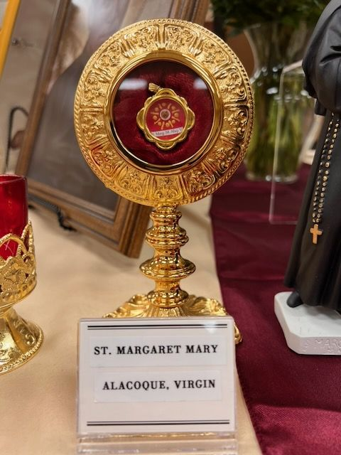

The label is in English
Saint Margaret Mary Alacoque reliquary
On the label
ST. MARGARET MARY ALACOQUE, VIRGIN
In English
Saint Margaret Mary Alacoque, virgin.
Saints named
The seal is read in IMG_0901.
A shareable catalog
Photographs from St Clare Parish (Roseville, CA) relic display. The words on each label are kept as written and given again in English. Latin is translated.
583 photographs · 233 saints named

The label is in English
On the label
ST. MARGARET MARY ALACOQUE, VIRGIN
In English
Saint Margaret Mary Alacoque, virgin.
Saints named
The seal is read in IMG_0901.